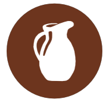

Productos ibéricos elaborados de manera artesana para gusto y disfrute de los paladares más exigentes.
Este queso proviene de las cabras payoyas, propias de la Sierra de Grazalema y la Serranía de Ronda. Quesos curados envueltos en manteca, pimentón o romero. No podrás quedarte con uno solo.
Crema de ajo emulsionada, muy típica de Jaén, perfecta para untar tostas de pan fritas con aceite de oliva Virgen Extra.
Consulta la receta en este enlace.
Vuelve arriba.
Sopa preparada a partir de caldo de puchero, con taquitos de jamón ibérico y huevo cocido. Un plato reconfortante muy popular en Sevilla.
Puedes conocer cómo se elabora este plato en este enlace.
Sopa blanca con pescado, patata y mayonesa como base principal. Una tradición de pescadores malagueños que te atrapará.
Aquí puedes ver la receta de este delicioso plato.
Esta alternativa a la sopa a base de carnes es exquisita y nutritiva, elaborada una gran variedad de vegetales.
Consulta los pasos para realizar la receta de este plato en este enlace.
Vuelve arriba.
Plato típico de la provincia de Granada, una sencilla receta que te dejará más que satisfecho.
Esta receta granadina la puedes consultar aquí.
Tiernas carrilleras de cerdo elaboradas con Pedro Ximénez, de la región vinícola de Montilla-Moriles (Córdoba). Se deshacen en la boca.
En este enlace tienes la receta de este exquisito plato.
Exquisito rabo de toro preparado al estilo cordobés, con guarnición de patatas fritas o en puré.
En esta página encontrarás la forma de cocinar este plato.
Vuelve arriba.
Dulces típicos malagueños, "emborrachados" con vino blanco, anís y vino dulce de Málaga.
Para preparar estos dulces consulta este enlace.
Dulce almeriense a base de almendra, originario de la gastronomía andalusí.
Consulta la receta aquí.
También conocido como turrón de Cádiz, es un mazapán típico gaditano relleno de dulce de batata y crema de yema.
Conoce más sobre este dulce gaditano en esta página.
Vuelve arriba.
Vinos andaluces con Denominación de origen: Condado de Huelva, Jerez-Xérès-Sherry, Manzanilla de Sanlúcar, Málaga, Sierras de Málaga, Montilla-Moriles y Granada.
Vuelve arriba.
| Alérgenos | |
 | ||||||||||||
|---|---|---|---|---|---|---|---|---|---|---|---|---|---|---|
| Entrantes | ||||||||||||||
| Surtido Ibéricos | ||||||||||||||
| Quesos Cabra | ||||||||||||||
| Ajoatao | ||||||||||||||
| Primeros platos | ||||||||||||||
| Sopa Picadillo | ||||||||||||||
| Gazpachuelo | ||||||||||||||
| Consomé Verduras | ||||||||||||||
| Segundos platos | ||||||||||||||
| Habas Jamón | ||||||||||||||
| Carrillera | ||||||||||||||
| Rabo Toro | ||||||||||||||
| Postres | ||||||||||||||
| Borrachuelos | ||||||||||||||
| Alfajores | ||||||||||||||
| Pan Cádiz | ||||||||||||||
| Leyenda | |||||||||||||
|---|---|---|---|---|---|---|---|---|---|---|---|---|---|
| Altramuces | Apio | Cacahuetes | |
Crustáceos | Dióxido de Azufre y Sulfitos | Frutos de Cáscara | Gluten | ||||||
| Granos de Sésamo | Huevos | Lácteos | Moluscos | Mostaza | Pescado | Soja | |||||||
Vuelve arriba.